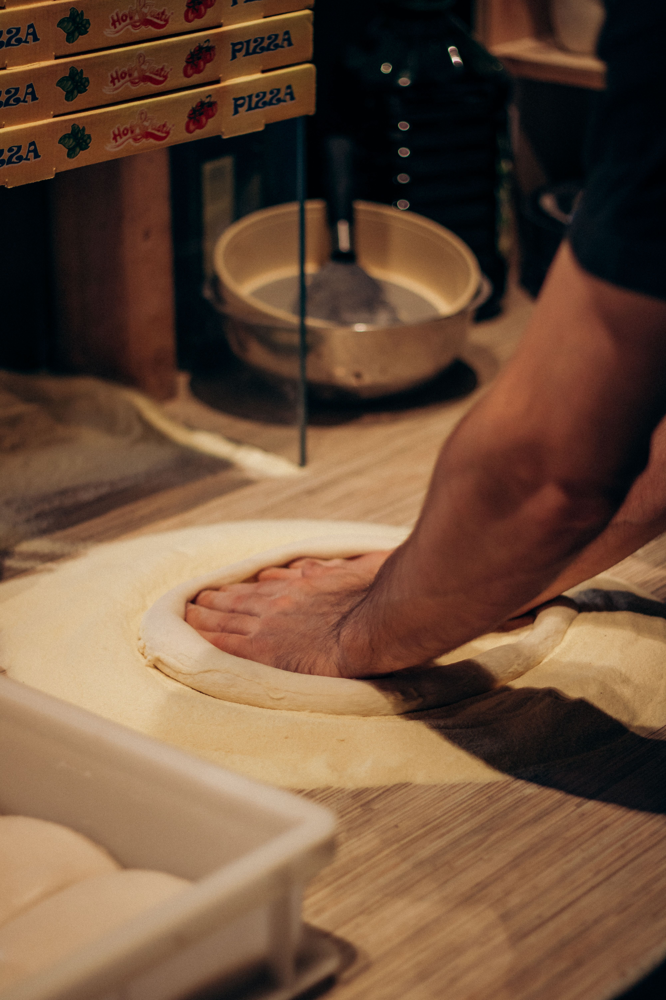

Breads & Dough

Homemade Hoagie Rolls
Soft, chewy, and so much better than store-bought. I use these for sandwiches all week long and my family refuses to go back to the bagged stuff.

Homemade Hamburger Buns
Fluffy, golden, and they hold up to even the juiciest burger. Once you make these you'll never want a store bun again — they're that good.
Homemade Hotdog Buns
Same soft dough as my hamburger buns, just shaped differently. Clean ingredients, no junk — and the kids love them every single time.

Homemade Pizza Dough
Six ingredients and ten minutes of hands-on time. This is our Friday night tradition and it never gets old. Crispy on the outside, chewy on the inside.

Homemade Sandwich Bread
Seven ingredients, no junk. Soft, fluffy, and slices perfectly every time. My kids take sandwiches on this bread every day and I feel good about every single one.

Homemade Soft Pretzels
Chewy on the inside, golden and salted on the outside — just like the ones at the mall but made right in your own kitchen. My family goes crazy for these every single time.

Homemade Dinner Rolls
Soft, pillowy, and brushed with butter straight out of the oven. These are the rolls everyone reaches for first at the dinner table — and they're so easy to make.

Homemade Cinnamon Rolls
Thick, gooey, and smothered in cream cheese icing. I make these on weekend mornings and the whole house smells incredible. Worth every single minute.

Homemade Naan
Soft, chewy, and slightly charred — cooked right on the stovetop. I make this alongside soups, stews, and anything that needs something to soak up the sauce.

Homemade Flour Tortillas
Five ingredients and ten minutes — and they taste nothing like the ones from the bag. Soft, flexible, and so much better for tacos, wraps, and quesadillas.